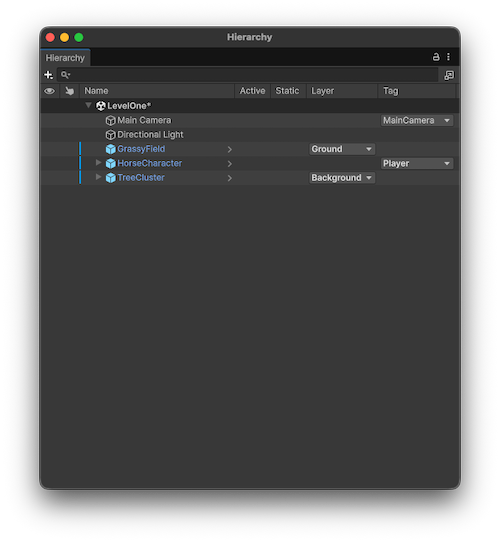
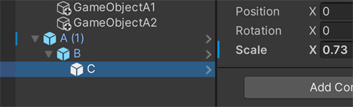
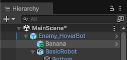

Explore the settings and functions in the Hierarchy window to view and organize objects in your sceneA Scene contains the environments and menus of your game. Think of each unique Scene file as a unique level. In each Scene, you place your environments, obstacles, and decorations, essentially designing and building your game in pieces. More info
See in Glossary.
The Hierarchy window displays every GameObjectThe fundamental object in Unity scenes, which can represent characters, props, scenery, cameras, waypoints, and more. A GameObject’s functionality is defined by the Components attached to it. More info
See in Glossary in a scene, including models, cameras, and prefabsAn asset type that allows you to store a GameObject complete with components and properties. The prefab acts as a template from which you can create new object instances in the scene. More info
See in Glossary. You can use the Hierarchy window to manage and group the GameObjects you use in a scene. When you add or remove GameObjects in the Scene view, you also add or remove them from the Hierarchy window.
For more information about creating and organizing items in the Hierarchy window, refer to Manage GameObjects in the Hierarchy window.
Icons in the Hierarchy window indicate the type, visibility, and pickability of items in your scene.
The icons next to the GameObject name indicate whether the item is a basic GameObject or a prefab, and whether a prefab has been modified from its original values.
You can identify the following types of items using the icons in the Hierarchy window.
| Item | Icon | Description |
|---|---|---|
| GameObject | The foundational building blocks of all items in a scene. GameObjects are containers for components, which provide functionality. For more information, refer to Introduction to GameObjects |
|
| Prefab | Prefabs are assets that act as a template for specific items in your scene. When you edit a prefab asset, updates are applied to all instances of that asset that appear in your scene. For more information, refer to Introduction to prefabs. |
|
| Prefab variant | A prefab variant is a prefab asset that inherits some properties from a different prefab asset, while others properties have new values. Essentially, it’s a new prefab that’s based on an original, base prefab with some changes, or overrides. Editing the base prefab also edits the variant, except for properties that are already changed in the variant. For more information, refer to Create variations of prefabs. |
|
| Prefab model | Prefab models are prefabs that are imported from other digital content creation (DCC) software. Prefab models can contain skeletons, materials, meshes, animations, and more. |
The scene visibility status controls whether the GameObject is hidden or displayed in the Scene viewAn interactive view into the world you are creating. You use the Scene View to select and position scenery, characters, cameras, lights, and all other types of Game Object. More info
See in Glossary. You can toggle visibility on and off using the status indicator at the edge of the Hierarchy window. For more information, refer to Scene visibility.
The following visibility states are available.
| State | Icon | Description |
|---|---|---|
| Visible | The GameObject and all its children are visible in the scene. This is the default status for a new GameObject. This status icon is visible only when you hover over the GameObject. | |
| Hidden | The GameObject and all its children are hidden in the scene. | |
| Visible parent | The GameObject is visible in the scene, but one of more of its children are hidden. | |
| Hidden parent | The GameObject is hidden in the scene, but one of more of its children are visible. |
The scene pickability status controls whether you can select the GameObject in the Scene view. You can toggle pickability on and off using the status indicator at the edge of the Hierarchy window. For more information, refer to Scene picking controls.
The following pickability states are available.
| State | Icon | Description |
|---|---|---|
| Pickable | You can select the GameObject, and any of its children, in the Scene view. This is the default status for a new GameObject. This status icon is visible only when you hover over the GameObject. | |
| Not pickable | You can’t select the GameObject, or any of its children, in the Scene view. | |
| Pickable parent | You can select the GameObject in the Scene view, but you can’t select one or more of its children. | |
| Not pickable parent | You can’t select the GameObject in the Scene view, but you can select one or more of its children. |
Enable the New Hierarchy setting in the Preferences window (Edit > Preferences (macOS: Unity > Settings) > General) to change the view of the Hierarchy window. This view displays extra information about the GameObjects in your scene such as their layersLayers in Unity can be used to selectively opt groups of GameObjects in or out of certain processes or calculations. This includes camera rendering, lighting, physics collisions, or custom calculations in your own code. More info
See in Glossary and tags
See in Glossary, and optionally highlights each alternate row for easier navigation of items.
Important: The New Hierarchy setting is in preview and might change in future versions of Unity.

Right-click on the header row of the Hierarchy window to customize the information displayed:
| Option | Description |
|---|---|
| Resize to Fit | Resizes the columns to fit the width of the Hierarchy window. |
| Visibility | Displays a column to control the scene visibility status of the GameObject. |
| Picking | Displays a column to control the scene pickability status of the GameObject. |
| Active | Displays a column to control the active status of the GameObject. |
| Static | Displays a column to control the static status of the GameObject. |
| Layer | Displays a column to view and control the layer assigned to the GameObject. Use the dropdown menu to assign a new layer to the GameObject. |
| Tag | Displays a column to view and control the tags assigned to the GameObject. Use the dropdown menu to assign a new tag to the GameObject. |
| Reset Columns | Resets the Hierarchy window to the default columns, which are Picking, Active, and Name. |
Unity displays only the values that are different from the default in each column.
When you edit a prefab instance in a scene, Unity displays an indicator next to the parent GameObject in the Hierarchy window. This indicator highlights any prefab that has non-default override values in any of its child GameObjects. To open the Overrides dropdown directly from the Hierarchy window, select the override indicator. The override indicator appears as a blue line in the left side of the margin and is identical to the instance override in the InspectorA Unity window that displays information about the currently selected GameObject, asset or project settings, allowing you to inspect and edit the values. More info
See in Glossary window. For more information, refer to Override prefab instances.

Any objects that are added to the instance have a plus badge on their icons.
